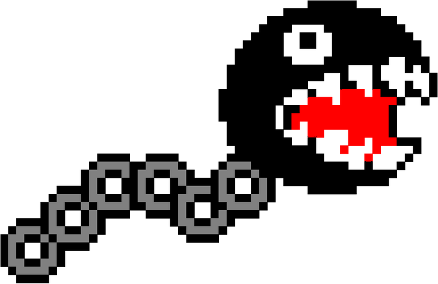

@ilrk
[
home
] [
github
] [
about
]
A Brief History of the Linked List Backlash
Published on September 4, 2025 under the tag
code

Arguments
Performance
Source
C++ community
Defends
Demographics
Example of usages
Conclusion
Stack over flow people referring to Chandler Carruth
Chandler Carruth’s talk on performance
Are lists evil? – Bjarne Stroustrup
Kjellkod’s Blog
In defense of linked lists - Salvatore Sanfilippo
In defense of lined lists - Ryan Fleury
Learn Rust With Entirely Too Many Linked Lists
ce0f13b2-4a83-4c1c-b2b9-b6d18f4ee6d2